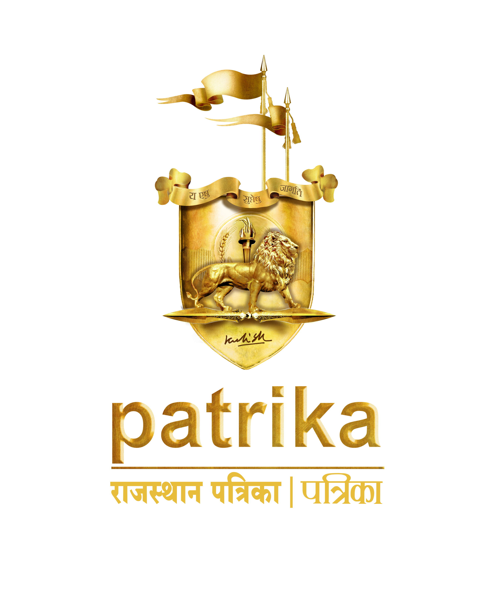

The Red Box is
more than a symbol.
It's the human heart-raw, real, alive.
It holds our instincts, emotions, and dreams.
But the real magic? Is in what we choose to do with them.
Patrika invites
you to pour your heart into one
powerful idea.
If chosen, we'll take it to the streets-across 10 cities,
as a full-fledged campaign that
reshapes
conversations,
heals the fabric, and sparks tangible change.
This isn't a contest. It's a calling. First Prize: $11,000
*Scan the QR code. Begin the beat.*
The Concerned Communicator Awards (CCA) is a social
advertising award instituted by Rajasthan Patrika
with a belief that communication can drive change. In last edition participants from over 20
countries
took part in CCA.
CCA recognizes impactful ideas that address real-world
issues through creative advertsing. It offers
unmatched creative freedom and a unique opportunity to contribute to social good. The platform
encourages professionals to turn powerful insights into campaigns that inspire action.
WHAT YOU NEED TO DO:
Select a real-world issue from our list
and
submit a campaign including:
Creative Strategy - Clear, focused communication approach
3 Print Ads - Impactful, printable creatives
3 Social Media + 3 Radio Ads - in a ready to play format video - mov/avi Sound - MP3
Media Plan - Print, Radio, Digital & 00H
A4 Note - Summary of creative strategy and media plan (print, radio, digital)
Who Can Participate?
Creative professionals, media managers, and those in
marketing or communication roles.
No entry fee. Just big ideas.
AWARDS
FROM RECOGNITION TO REALIZATION
Every idea has value. These get rewarded.
TOP - 50 SHORTLIST
Shortlisted entries published in Rajasthan Patrika
with key ads and widespread exposure.
SPECIAL MENTIONS - TOP - 20
Featured on Patrika's digital platforms and awarded
Certificates of Appreciation.
FINALISTS - TOP - 10
Eligible for an optional multimedia rollout campaign
across Patrika's channels, with premium
exposure.
GOING BEYOND AWARDS...
For those who want to drive real change, Patrika invites
you to bring your boldest ideas to the
forefront.
Winners will present their concepts to a prestigious panel of Jury Members, Influencers, Media
Icons,
and
Celebrities. If your idea is chosen, Patrika will back it with scale, media power, and unwavering
commitment-transforming your vision into a year-long, on-ground movement.
We'll mentor you, amplify your message with strong
editorial support, and run the campaign across
platforms
to create deep, measurable impact.
(Completely optional. But if you're in—we scale the impact, together.)
PITCHING TO THE PANEL
Jury Members
Influencers
Media Icons
Celebrities

ABOUT PATRIKA
Rajasthan Patrika's legacy is built on nearly four
decades of trusted journalism that blends deep
local
roots with a
naonal outlook. Known as the "Newspaper with a Soul," Patrika reaches over 2.59 crore readers
and
ranks
as the
26th highest-circulated paid newspaper globally (WAN-IFRA) and India's 5th largest (AMIC
UNESCO).
With
38
edions across eight states—including a strong presence in both northern Hindi heartlands and
southern
India—Patrika brings daily coverage that spans pressing local issues, crical naonal events, and
the
human stories
behind them. Operang under the simpler name "Patrika" in Madhya Pradesh and Chhasgarh, the
group's
widespread influence ensures that half of India's Hindi-speaking populaon turns to Patrika as
its
primary news
source.
Over the years, Patrika has evolved beyond hard news
to embrace diverse interests and emerging
trends,
craing
intelligent content in business, sports, technology, startups, and women's empowerment. Its
editorial
team—fueled by iniaves such as Patrika Raksha Kawach and JanPrahari—reflects a commitment to
progressive,
values-driven storytelling. Patrika has pioneered conversaons around AI, the metaverse, fintech,
and
sustainability, ensuring that its pages resonate with both tradional readers and a younger,
tech-savvy
audience.
By seamlessly blending news and non-news segments—from expert ps to city features—Patrika
connues to
uphold editorial excellence while remaining a changemaker in India's rapidly evolving media
landscape.
Certainly! Here's your requested secon, with a
strong heading and crisp two-liners in English
summarizing
each of
Patrika's major public campaigns. This can go well under a web secon like "Legacy of Impact" or
"Our
Social
Campaigns":
HOW TO PARTICIPATE
THE PROCESS
Want to change the world? Start here.
1. REGISTER
Visit the official CCA microsite to review guidelines, eligibility criteria, and deadlines.
2. CHOOSE A TOPIC
Select one of the eight detailed themes above. Each is accompanied by Context, Problem, Data &
Insights,
Challenge Brief, Key Messaging Angles, Goal, and Suggested Campaign Lines.
3. CREATE
Concept & Strategy: Align your idea with the chosen theme.
Media Plan: Define channels (print, digital, radio, on-ground activations) and timelines.
Visual Creatives: Produce artwork for print ads, digital banners, video storyboards, or radio
scripts.
One Key Ad: Design a standout print ad (for Top - 50 publication).
4. SUBMIT
Upload your entry package-concept write-up, strategy document, artwork files, and key ad-through the
online
portal. Follow file-format and size requirements precisely
Top - 50: Key ads are published in Rajasthan- Patrika.
Top - 20 Special Mentions: Feature on digital platforms + Certificates.
Top - 10 Finalists: Optionally partner with Patrika for multimedia rollout campaigns.
Winners: Cash prizes, trophies, and high-impact implementation support.
Big-7 Campaigns: Seven standout ideas get full-scale adoption and ongoing case study
documentation.
You don't just win CCA-you become a catalyst for lasting social change.
Join us and let your idea reshape communities, policies, and lives.
7. GOING BEYOND AWARDS...
For those who want to drive real change, Patrika would be happy to adopt your idea, mentor you, and
run the campaign for an entire year, backed by strong editorial support to create a meaningful
impact on the ground.
(Completely optional. If you choose to stay in, we'll scale the impact-together.)
(Female Feticide & Declining Sex Ratio in Rajasthan)
CONTEXT
Rajasthan—a state steeped in tradition—faces a persistent crisis: the female sex ratio continues to
decline. After momentary improvement (from 929 in 2015–16 to 948 in 2018–19), 2023 data show a
reversal. The child sex ratio (0–6 years) stands at only 891 girls per 1,000 boys. Despite strict
laws (PCPNDT Act) banning prenatal sex determination, deep‑rooted son preference drives female
feticide and neglect of girl children. The theme "राजस्थान की लाडली: कोख में दम तोड़ रही उम्मीद"
(Rajasthan's Daughters: Hope Silenced in the Womb) captures this tragic paradox—girls denied life
even before birth, despite being revered in folklore and names.
THE PROBLEM
Son Preference: Generations‑old belief that sons carry family lineage and provide old‑age
security.
Dowry Pressure: Girls seen as an economic burden due to dowry customs.
Social Status Myth: Male heirs equated with pride; daughters deemed burdensome.
Illegal Prenatal Sex Tests: Despite the PCPNDT Act, families still seek illicit ultrasounds;
female
fetuses are aborted.
Post‑Birth Neglect: Surviving girls face biased nutrition, school dropouts, and emotional neglect.
Even where girls are born, they confront discrimination—skipped immunizations, early marriages, and
emotional trauma. Some villages now resort to "bride‑buying" from other states, fueling trafficking.
Loneliness, depression, and low self‑esteem plague many girls who do see the light of day.
DATA & INSIGHTS
Overall Sex Ratio (2023): 928 females per 1,000 males.
Child Sex Ratio (0–6 years): 891 girls per 1,000 boys (Rural: 933; Urban: 914).
District Hotspots: Shekhawati, Jhunjhunu, Churu report extreme skew—some villages haven't seen
a
single
girl born in years.
Cultural Patterns:
Sons celebrated; daughters often hidden.
Rise of trafficking ("looteri brides")—in 2022, raid in Sikar district rescued 12 girls from
forced
marriages.
Psychological Toll: Girls suppressed in self‑worth, leading to depression, school dropout, and
sometimes suicide.
The Challenge Brief
Design a campaign—titled "राजस्थान की लाडली: कोख में दम तोड़ रही उम्मीद"—that:
Exposes Root Causes: Dissect myths like "Beta hi vansh ko badhata hai" (only sons carry
lineage) and "Beti bojh hai" (daughters are burdens).
Educates & Empowers Families: Demonstrate the economic and social value of daughters—from
inheritance rights to community well‑being.
Shifts Perception: Showcase girls who excel—academics, sports, entrepreneurship—to
position daughters as pride rather than pity.
Stimulates Community Dialogue: Mobilize panchayats, teachers, religious leaders to speak
out against sex selection.
Focus on Action: Encourage reporting of illegal clinics, pledges to protect girl
children, and integration of girl‑child welfare into village development plans.
Key Messaging Angles
Pride Over Pity: "बेटा नहीं भगवान सहारा है, बेटी भी तो उसी की तारा है"
(If sons are support from God, daughters are equally divine sparks.)
Human Rights & Legal Duty: Enforce PCPNDT Act; emphasize daughters' right to life.
Role Models: Stories of girls excelling—e.g., Malala-style campaigns, local achievers
like
17‑year‑old archer Sandhya from Barmer.
Community Champions: Teachers and panchayat leaders publicly vowing to protect girls.
Empowerment Over Charity: Position girls as agents of change who uplift families and
communities.
The Goal
Restore Sex Ratio: Achieve 950+ girls per 1,000 boys by 2028.
10,000 Pledges: Public pledges across 100+ villages to end prenatal sex determination.
Zero Illegal Clinics: Generate 500 actionable tips to authorities leading to clinic
shutdowns.
Education Drives: Integrate "Save the Girl Child" modules in 200+ rural schools by
end‑2025.
Community Dialogues: Conduct 1,000 Gram Sabha/school town halls on gender justice by
2026.
Suggested Campaign Lines
"Beti Zinda Hai, Toh Bharat Zinda Hai"
(If our daughters live, India lives.)
"Doli Nahi Aayi 20 Saal Se… Ab Aayi Kyunki Betiyan Paida Huyi"
(No marriage processions for 20 years… now they return because daughters are finally born.)
"आपकी बेटी ही आपके परिवार की असली शक्ति है"
(Your daughter is your family's true strength.)
"बेटियाँ बोझ नहीं, भविष्य की नींव हैं"
(Daughters are not burdens, they are the foundation of our future.)
Though Jabalpur lies in Madhya Pradesh, this case study can inspire river‑restoration campaigns
for Rajasthan's urban centers (e.g., the Chambal, the Banas).
CONTEXT
The Narmada (Reva) River—revered as a goddess—is central to Central India's ecology and culture.
Yet by 2017, even its source at Amarkantak was polluted by sewage outlets and open defecation.
In Jabalpur (the largest city on the Narmada), 200 MLD (million liters/day) of wastewater is
produced daily; only 0.55 MLD is treated. Overall, towns along Narmada generate \~200 MLD of
sewage, but only 87 MLD is treated—leaving 110 MLD of raw waste contaminating the river. This
pollution harms biodiversity (e.g., mahseer fish) and creates a mounting ecological and
public‑health crisis.
THE PROBLEM
Raw Urban Discharge: Major drains (e.g., Gaurighat drain in Jabalpur) channel
untreated sewage directly into Narmada.
Industrial Effluents: Factories (e.g., Bhedaghat gelatin plant, sugar mills) dump
chemical waste without treatment.
Non‑Functional STPs: Kathaunda (50 MLD) and Lalpur (34 MLD) STPs exist but were
stalled for years; Omkareshwar's four STPs operate only one, due to technical failures.
Regulatory Failure: Despite National Green Tribunal (NGT) orders (Sep 2023) and MPPCB
fines (₹17.22 crore on 12 towns), municipal bodies have repeatedly missed deadlines.
Multi‑District Spread: Pollution is systemic—Narsinghpur's sugar factories,
illegal
sand
mining, and dysfunctional STPs in Mandleshwar, Badwani, etc., all contribute to river
contamination.
Despite recent inaugurations (e.g., Gaurighat STP in Jabalpur), thousands still see a dying
river, and residents continue to fall ill from contaminated water.
DATA & INSIGHTS
NGT Intervention (Sep 2023): Mandated MP's Environment Secretary and MPPCB to
survey all urban
centers on Narmada; found \~51 MLD untreated sewage still flows daily.
Enforcement Notices (Late 2024): MPPCB levied ₹1.36 Cr on Narmadapuram, ₹1.76 Cr on
Nemawar, and
other fines totaling ₹17.22 Cr.
Infrastructure Status:
Jabalpur: 13 functional STPs (7 major drains); Gaurighat STP recently
inaugurated
(5‑Star rating
under Clean Water Survey 2025).
Lalpur (34 MLD) & Kathaunda (32 MLD): Achieved 5‑Star ratings, but require
full
commissioning.
Omkareshwar: Four STPs built; only one operational.
Expert Involvement: CSIR‑NEERI engaged for water‑quality assessments;
proposal for a
dedicated
Narmada River Research Centre to monitor real‑time data.
The Challenge Brief
Craft a "Nirmal Narmada Abhiyan" campaign that:
Bridges Faith & Facts: Leverage Narmada's sacred status ("Mother Narmada") to evince
moral
duty for cleanliness.
Mobilizes Civic Pride & Accountability: Show citizens that river pollution is a
betrayal of
faith and environmental rights.
Pressures Authorities: Highlight NGT orders and MPPCB fines—create civic shame and
political
urgency.
Narrows Gaps Between Plans & Action: Use emotional storytelling—fishers, farmers,
children
speak out on how river death affects livelihoods.
Fosters Community Ownership: Encourage formation of "Narmada Sewa Parivar" volunteer
groups
in every district; partner with schools, temples, and youth associations for clean‑up
drives.
Key Messaging Angles
Spiritual Duty: "Namami Devi Narmade – Let's Serve Our Mother River, Not Pollute
Her!"
Civic Right & Duty: Frame clean water as a constitutionally guaranteed right and
collective
duty.
Accountability of Authorities: "Is this the respect we owe our Mother? Why are STPs
still non‑functional?"
Science & Evidence: Publish BOD/coliform data from NEERI to demonstrate low
water‑quality
benchmarks at Gaurighat and Omkareshwar.
Community & Youth Engagement: Promote river parikrama cleanups; share fisherfolk
testimonies;
use children's drawings to depict a vivid, pollution‑free future.
The Goal
Zero Untreated Discharge: By 2026, ensure 100% of municipal sewage from all Narmada
towns is
treated; all STPs (Jabalpur, Omkareshwar, etc.) must be fully operational.
Water Quality Targets: Achieve Class B/C standards at major monitoring points
(e.g., Gaurighat,
Omkareshwar) by Q4 2025—target 50% reduction in BOD/coliform levels.
Ecosystem Revival: Restore native fish populations (mahseer) within five years;
reestablish
wetlands and riparian habitats.
Community Mobilization: Form 1,000 "Narmada Sewa Parivar" volunteer groups by
end‑2025; conduct
monthly riverbank clean‑up drives in every district.
Transparent Monitoring: Launch a publicly accessible quarterly River Health Dashboard
(led by
River Research Centre) by Q3 2025.
Suggested Campaign Lines
"Namami Devi Narmade – Let's Serve Our Mother River, Not Pollute Her!"
"Narmada Maiya Ki Pukar, Maila Jal Nahin Chahiye!"
(Mother Narmada cries; she deserves no dirty water!)
"Har Ghar Se Maila Pani Nahi, Sirf Shudh Narmada Chahiye!"
(No dirty water from every home—only pure Narmada, please!)
"अगर माँ की प्यारी धारा दूषित है, तो उसका परिवार कैसे बच पाएगा?" (If our Mother's
pure
stream is polluted, how can her family survive?)
"Clean Narmada, Happy Warda (Mother): Act Now for Your River!"
3. E‑WASTE CRISIS & URBAN SUSTAINABILITY
- Raipur, Chhattisgarh
(Electronic Waste Management in Raipur)
Though Raipur is in Chhattisgarh, the lessons apply to Rajasthan's growing towns (e.g., Jaipur,
Udaipur, Jodhpur).
CONTEXT
Raipur, capital of Chhattisgarh, is grappling with a surging e‑waste crisis. With ~1.6 million
residents generating about 2.5 kg of e‑waste per person annually, the city produces over 3,728
tonnes of e‑waste every year. Yet Raipur has no functional government‑authorized recycling or
disposal facility. Since 2018–19, discussions between the Chhattisgarh Environment Conservation
Board, Raipur Municipal Corporation, and Smart City authorities have stalled. A single private
company once collected under the Smart City initiative, but its toll‑free helpline and
operations have ceased. E‑waste toxins (lead, mercury, cadmium) seep into soil and groundwater,
threatening public health, especially for children and informal waste workers.
THE PROBLEM
No E‑Waste Plant: Planned processing facility for Mandir Hasaud has not materialized.
Defunct Collection Systems: Sixteen e‑waste drop‑off centers opened under Smart City
have all shut down due to low usage—residents now sell old electronics to informal scrap
dealers.
Inactive Authorized Processor: The sole authorized e‑waste processor under Raipur's
Smart City project is now defunct; no official body manages e‑waste flow.
Health Hazards: E‑waste contains heavy metals and toxic fumes; improper dismantling
contaminates groundwater, soil, and air—especially harmful to children and informal
recyclers.
Public Ignorance: Limited awareness of safe disposal protocols, helpline numbers, and
environmental consequences.
DATA & INSIGHTS
Annual E‑Waste Generation: ~3,728 tonnes (2.5 kg per resident).
Collection Centers: All 16 drop‑off points have closed due to low inflow.
Official Processor: Only one, now non‑operational.
Urban Waste Load: Daily generation of ~700 tonnes of general waste; e‑waste is a
smaller fraction but has far greater toxicity.
Existing Waste Infrastructure: Sakri plant handles general urban waste; no dedicated
e‑waste facility exists.
The Challenge Brief
Develop an integrated "E‑Waste Raipur Reboots" campaign that:
Reframes E‑Waste: Educate citizens that e‑waste is hazardous, not just "junk."
Calls for Infrastructure: Demand construction and commissioning of the Mandir Hasaud
processing facility by 2026.
Revives Collection Systems: Reopen and expand drop‑off centers to every ward; pilot
door‑to‑door e‑waste pickup drives in high‑density neighborhoods.
Engages Stakeholders: Mobilize RMC officials, electronics retailers, scrap dealer
associations, and NGOs to collaborate on safe dismantling and recycling.
Public Accountability: Publish monthly e‑waste dashboards—tonnage collected, facility
progress, and health‑impact indicators.
Key Messaging Angles
"Your Old Phone Can Poison the Planet": Emphasize hidden toxins in e‑waste and
long‑term health impacts.
Citizen Responsibility: Show how every household can help by dropping off old devices
at designated centers.
Infrastructure Gaps: "Why does Raipur still have no e‑waste plant? Who's
accountable?"
Youth & Schools: Engage students via "Clean Device, Clean City" drives—e‑waste art
installations or competitions.
Retailer Partnerships: Partner with local electronics retailers to collect
end‑of‑life gadgets; offer small incentives or exchange discounts.
The Goal
Processing Facility by 2026: Construct and commission a government‑authorized e‑waste
plant in Mandir Hasaud.
Reactivated Collection Centers: All 16 original centers operational by end‑2025;
expand to 30 new centers across municipal wards.
Annual Collection Target: Collect at least 2,000 tonnes of e‑waste in 2026 (half of
total generation).
Awareness Campaign Penetration: Educate 100 schools, 50 Resident Welfare Associations
(RWAs), and 500 electronics retailers on e‑waste hazards and safe disposal by Q4 2025.
Transparent Monitoring: Publish monthly online dashboards showing collection metrics,
plant capacity utilization, and next steps.
Suggested Campaign Lines
"Your Old Phone Can Poison the Planet – Dispose Smartly!"
"Scrap That Doesn't Vanish – E‑Waste Needs a Home."
"Don't Dump Danger – Recycle E‑Waste the Right Way."
"Raipur Reboots: Clean Devices, Clean City."
"Kabadi Is Not the Cure – E‑Waste Needs Science."
4. PRESERVATION OF TRADITIONAL ARTS AND CRAFTS
- Udaipur, Rajasthan
(Preserving Traditional Arts – Udaipur, Rajasthan)
CONTEXT
Udaipur, the "City of Lakes," is also a cradle of numerous traditional art forms—Mevadi Gair
(tribal folk dance), Jeetmal bamboo-wooden artifacts, Pichwai textile paintings, and classic
miniature painting. Over generations, artisans have passed these crafts down, making them
integral to Udaipur's identity. Yet these art forms are vanishing due to lack of market access,
generational disconnect, and minimal institutional support. "Udaipur Sanskaran Abhiyan" seeks to
revive and sustain these indigenous traditions by connecting artisans with new‑age audiences,
creating livelihood opportunities, and reimagining cultural relevance.
THE PROBLEM
Disconnection from Markets: Artisans lack direct access to urban buyers, e‑commerce
platforms, or tourism sales channels. Middlemen capture most profits.
Lack of Official Recognition: Crafts like Mevadi Gair and Pichwai lack GI
(Geographical Indication) tags, undermining authenticity and pricing power.
Generational Gaps: Younger generations abandon ancestral crafts for more lucrative
jobs, leaving fewer masters to train apprentices.
Tourism Disconnect: Tourists focus on palaces, lakes, and Bollywood sets while
ignoring authentic craft villages.
Infrastructure Constraints: Limited stalls, workshops, or exhibition spaces; artisans
must travel far to sell or demonstrate their work.
DATA & INSIGHTS
Vulnerable Art Forms:
Mevadi Gair: Tribal folk dance—nearly extinct without institutional support.
Jeetmal Craft: Bamboo speakers and wooden artifacts—demand down 60% in the
past decade.
Pichwai Art: Devotional textile paintings—fewer than 10 full‑time Pichwai
artists remain in Udaipur.
Miniature Painting: Majority of traditional miniature painters have shifted
to hospitality jobs; only a handful remain full‑time.
Economic Impact:
Pichwai artists earn ₹80,000–₹100,000 annually—below poverty line during non‑tourism
months.
Jeetmal artisans produce ~200 pieces/month but sell only 50 due to lack of market
linkages.
Tourism Disconnect:
Tourists spend 80% of their time at City Palace, Lake Pichola, or Sajjangarh
Fort—rarely visiting craft villages.
Bagore Ki Haveli hosts only 10–15% of local artisans; no centralized "Art Mart"
exists.
The Challenge Brief
Launch "Udaipur Sanskaran Abhiyan" to:
Rebuild Local Pride: Position traditional arts as Udaipur's unique selling
point—beyond lakes and palaces.
Create Economic Pathways: Establish physical and digital marketplaces; partner with
e‑commerce portals, heritage hotels, and local CCA participants.
Engage Youth & Institutions: Drive school‑based awareness campaigns on craft
heritage; invite art school students to apprentice with masters.
Pursue Official Recognition: Facilitate GI‑tag certification for Mevadi Gair and
Pichwai Art; collaborate with Rajasthan Handloom & Handicrafts Department.
Build Infrastructure: Set up "Udaipur Heritage Art Hubs" (dedicated stalls, gallery
spaces, micro‑workshops) in the Old City and major tourist zones.
Key Messaging Angles
"Art Is Our Heritage. Let's Not Let It Fade."
Generational Continuity: "Teach a Child the Value of Culture—Preserve a Thousand
Years."
Empowerment Through Livelihood: "From Forgotten to Flourishing—Join the Movement."
Official Recognition: "GI Tags Give Our Crafts a Global Identity."
Revive 10 Endangered Crafts by 2026: Secure GI tags for Mevadi Gair and Pichwai Art;
ensure at least 50 practicing artisans in each.
Sustainable Livelihoods: Increase 300 artisans' annual incomes above ₹200,000 via
direct market linkages and digital sales by end‑2025.
Public Exhibitions: Host 4 major exhibitions annually (e.g., "Udaipur Craft Utsav")
in collaboration with tourism boards and heritage hotels.
Education & Apprenticeship: Enroll 500 youth apprentices in craft training programs
by 2025; integrate traditional arts modules in 50 local schools.
Online Marketplace: Launch "UdaipurArtisans.in" by Q1 2025, featuring 200+ products
from local artists with secure payment and shipping.
Suggested Campaign Lines
"Art is our heritage. Let's not let it fade."
"From forgotten to flourishing—join the movement."
"Udaipur Sanskaran: एक शहर, एक विरासत, एक अभियान"
(One city, one heritage, one movement.)
"Teach a child the value of culture—preserve a thousand years."
"Support Local Artisans, Sustain Our Legacy."
5. UNION CARBIDE LEGACY LAND
- Bhopal, Madhya Pradesh
(Transforming the Former Union Carbide Plant Site
– Bhopal, Madhya Pradesh)
CONTEXT
Bhopal, the capital of Madhya Pradesh, carries the deep scar of the 1984 Gas Tragedy—one of the
world's worst industrial disasters. The former Union Carbide pesticide plant spans approximately
87 acres. While toxic waste has been moved to Pithampur for treatment, the vast empty land
remains a painful reminder. Residents, civil society groups, and planners are debating how to
turn this symbol of tragedy into a site of resilience. Should it become a disaster‑memorial
museum, an urban forest, a research center, or a public park? Ownership disputes, legacy
liability, and environmental clearance issues have stalled any official master plan. Groundwater
contamination still affects nearby areas like JP Nagar, Atal Ayub Nagar, and Blue Moon Colony,
and many families continue to suffer health issues decades later.
THE PROBLEM
Emotional Scar: For thousands who lost loved ones or suffer lifelong health effects,
the site remains traumatic. Its desolation perpetuates collective grief.
Land Underutilization: This 87‑acre parcel in central Bhopal lies unused under heavy
security. It offers no public utility or ecological function.
Conflicting Visions: Stakeholders propose various futures—ecological forest, museum,
disaster memorial, public park—but no consensus or official blueprint exists.
Political & Legal Hurdles: Ownership rights, environmental clearance, and liability
questions remain unresolved. Public trust is low due to decades of delayed promises.
Health & Safety Concerns: Despite waste removal, groundwater contamination persists;
residents still report illnesses linked to long‑term exposure.
DATA & INSIGHTS
Site Size: 87 acres of prime urban land in Old Bhopal.
Remediation Status: Solid waste has been sent for disposal in Pithampur under MPPCB
directives.
Groundwater Quality: Studies reveal contamination in JP Nagar, Atal Ayub Nagar, Blue
Moon Colony; testing and filtration still required.
Public Sentiment: Local surveys (e.g., by Citizen for Bhopal) show 70% support for
converting the land into a public green space or national disaster memorial.
Legal/Administrative Standstill: Land remains fenced with no final redevelopment
plan; litigation over environmental responsibility continues.
The Challenge Brief
Transform the Union Carbide site into a place that balances memory, justice, and future needs:
Memorializing with Purpose: Build a world‑class disaster museum educating visitors on
industrial safety and human rights.
Healing Through Nature: Develop a Nagar Van (urban forest) promoting ecological
healing and public well‑being.
Urban Rebirth: Plan mixed civic use—research center for toxicology and disaster
management, public garden, amphitheater, community health unit.
Community‑Centric: Empower survivors' groups and local residents to co‑design the
site's future.
International Collaboration: Invite UNESCO, international disaster management
institutes, and global urban‑planning experts to contribute to a resilient landmark.
Key Messaging Angles
Memorializing with Purpose: "From Tragedy to Transformation – Bhopal Deserves
Better."
Healing Through Nature: "Let the Land Heal – Let the People Lead."
Urban Rebirth: "87 Acres, 40 Years, One Vision – A New Chapter for Bhopal."
Community‑Centric Planning: "The Past Will Be Remembered. The Future Will Be
Rewritten."
Global Partnership: "A Legacy of Learning—Bhopal as a Beacon for Industrial Safety
Worldwide."
The Goal
Master Plan by 2025: Finalize a participatory master plan for the 87 acres by
December 2025.
Complete Decontamination by 2028: Ensure soil and groundwater remediation within
three years.
Public Space & Memorial: Develop a dual‑purpose site: museum + green park delivering
educational and recreational value.
Community Engagement: Involve 10,000 residents and survivors through workshops,
visioning sessions, and design charrettes by mid‑2025.
Symbol of Resilience: Reposition the site from hazard to hope—"From Bhopal's wound to
India's wisdom."
Suggested Campaign Lines
"From Tragedy to Transformation – Bhopal Deserves Better."
"Let the Land Heal – Let the People Lead."
"87 Acres, 40 Years, One Vision – A New Chapter for Bhopal."
"The Past Will Be Remembered. The Future Will Be Rewritten."
6. STREET DOG ATTACKS & PUBLIC SAFETY CRISIS
- Gwalior, Madhya Pradesh
(Street Dog Attacks & Public Safety Crisis –
Gwalior, Madhya Pradesh)
CONTEXT
Gwalior has become a hotspot for a public‑health emergency: uncontrolled street dog attacks.
Between January and November 2024, Gwalior's government hospitals registered over 70,000 dog
bite cases—an average of 250 per day. The majority of victims are children (aged 6–15) and
elderly residents, who suffer severe injuries. Although 20,763 dogs were sterilized in the past
2.5 years, dog bite cases increased by 65%, signaling that current municipal actions
(sterilization and sporadic vaccination camps) aren't sufficing. The Birla Nagar ABC (Animal
Birth Control) centre can house only 8 cages (overloaded with 20–25 dogs per cage), and only 400
street dogs received anti‑rabies vaccines in recent camps—far too low to curb the rabies risk.
THE PROBLEM
Under‑Capacity Sterilization: The lone ABC centre in Birla Nagar cannot keep pace.
Inadequate Vaccination: Only 400 street dogs vaccinated recently; others remain
unvaccinated.
Budget Without Strategy: Over ₹42 lakhs spent on sterilizations, but no holistic
dog‑control plan exists.
Legal Apathy: High Court censured Gwalior Nagar Nigam for "paperwork over action,"
demanding a measurable plan.
Unsafe Feeding: Community members feed dogs in residential areas without controls,
intensifying human‑dog conflicts.
Children bear the brunt: on 25 Jan 2025, seven‑year‑old Ravi Kant underwent 107 stitches after a
four‑dog mauling. In February and April 2025, children aged 4–6 suffered severe facial injuries.
The lack of an actionable, measurable plan threatens lives daily.
Kota, Rajasthan—India's coaching capital—draws thousands of aspirants every year. Amid intense
academic pressure, a new menace has emerged: illegal digital loan apps that prey on vulnerable
students. Promising "instant cash" with minimal checks, these apps charge exorbitant interest
(1,000–3,000% APR) and impose hidden fees. When borrowers default, app agents employ brutal
recovery tactics—harassing calls, abusive messages, threats to share morphed private
photos—pushing already stressed students toward despair. The Government's Ministry of Home
Affairs has warned that "harassment, blackmail, and harsh recovery practices" by illegal loan
apps are driving citizens to suicide. The Reserve Bank of India now mandates direct disbursal
and repayment between regulated lenders and borrowers, banning third‑party intermediaries that
hide behind these apps.
THE PROBLEM
Exploitative Loan Terms: Apps lure students with quick loans but tack on sky‑high
interest and hidden fees. One student borrowed ₹46,000 and later found he owed over ₹1 lakh.
Coercive Collection Tactics: Borrowers must grant app access to contacts, storage,
and more; agents then harass and blackmail using doctored images. A victim who borrowed
₹2,000 still faced threats even after repayment.
Psychological Toll: Constant stigma, isolation, and fear lead to depression and
suicide. Cases include:
A young man repaid ₹3 lakh but was still harassed; he took his life.
A Telugu student jumped into a river after app agents demanded ₹1 lakh on a ₹10,000
loan.
Regulatory Gaps: Most predatory apps operate outside RBI/NBFC oversight. They are
shell companies (many with alleged Chinese backing) that vanish when exposed. Enforcement is
difficult; victims struggle to report before it's too late.
Local Impact: Kota Police report 23 student suicides in 2023 (highest toll in eight
years). Rajasthan recorded 22 student suicides in 2023 (highest ever). Nationally, NCRB data
show 13,089 student suicides in 2021, with rising share attributed to financial reasons.
DATA & INSIGHTS
Rising Student Suicides (2023): 23 in Kota by August 2023—surpassing 2022's entire
count. Rajasthan's total student suicides in 2023: 22.
Financial Stress Factor: NCRB attributes ~14% of suicides to "economic and financial
reasons." Kota's PHED Minister noted many parents borrowed heavily for coaching fees, adding
stress that "if they fail, what will happen to their parents?"
Official Warnings & Crackdowns:
Home Ministry advisory: illegal loan apps drive borrowers to suicide.
Early 2023: India blocked 94 Chinese‑linked predatory apps. Finance Ministry
proposed a "whitelist" of legal lending apps.
Scale of the Menace:
Lookout Security identified ~300 predatory loan apps worldwide, 251 on Google Play
(15+ million installs) targeting developing countries.
Times of India investigation: predatory apps on Play Store offering "quick loans"
but extorting with threats—fake nude images, phone‑number blackmail.
Human Stories:
Bengaluru: 22‑year‑old Thejas Nair died after harassment on a ₹46,000 loan.
Telangana: 20‑year‑old engineering student took his life despite repaying ₹3 lakh.
Andhra Pradesh: 22‑year‑old Vamshi Krishna jumped into a river after app agents
demanded ₹1 lakh on a ₹10,000 loan he'd already repaid.
These tragedies underscore the lethal link between predatory debt collection and mental‑health
crises.
The Challenge Brief
Create a social‑impact campaign that:
Educates: Demystify how these apps operate—bait‑and‑switch interest rates, hidden
fees, data‑harvesting for blackmail. Use real cases (e.g., the student still harassed after
death) to expose tactics.
Engages: Rally schools, coaching centers, parents to spot warning signs (unexplained
stress, sudden requests for money). Push policymakers to enforce RBI guidelines, clamp down
on predatory apps, and fast‑track legal action.
Imagines the Outcome: Frame the goal as saving lives: "No Kota student should lose
hope because of a loan app." Use striking visuals (broken chains of debt, empty study desk)
and peer testimonials, backed by data for credibility.
Maintains Urgency & Empathy: Convey that these are not just numbers—they're sons and
daughters with potential futures cut short.
Key Messaging Angles
Life Over Loans: "Just One Small Loan Can Become a Deathtrap."
Empowerment Over Shame: "Break Free from Predatory Apps—Choose Safety Over Shame."
Dreams vs. Exploitation: "Your Dream, Not Their Profit—Don't Let a Loan App Break
You."
Seeking Help: "When Debt Calls, Don't Wait to Scream—Help Is Here."
Cultural Connection: "Kode Ka Fateh Nahi, Zindagi Ka Sach Hai—Padho, Samjho, Bachho."
(Not victory in Kota's exams, but victory in life—learn, understand, survive.)
The Goal
Raise Alarm: Make predatory loan apps impossible to ignore. Students, parents,
educators, and authorities must recognize the deadly risk.
Drive Change: Pressure regulators and tech platforms to ban or remove illegal apps.
Enforce RBI's no‑third‑party‐intermediary rule.
Support Local Solutions: Establish debt‑counseling cells in Kota's coaching hubs.
Provide on‑campus counseling and support groups.
Save Lives: Empower students to refuse exploitative loans and seek help when under
debt pressure. Aim for a measurable drop in suicide cases linked to predatory loans—target a
30% reduction by end‑2025.
Create Sustainable Vigilance: Launch an ongoing "Safe Finance for Students"
initiative—helpline, school outreach, digital toolkit.
Suggested Campaign Lines
"Just One Small Loan Can Become a Deathtrap."
"Break Free from Predatory Apps—Choose Safety Over Shame."
"Your Dream, Not Their Profit—Don't Let a Loan App Break You."
"When Debt Calls, Don't Wait to Scream—Help Is Here."
"Kode Ka Fateh Nahi, Zindagi Ka Sach Hai—Padho, Samjho, Bachho."
(Not victory in Kota's exams, but victory in life—learn, understand, survive.)
8. CHILD BEGGING & TRAFFICKING
- Jaipur, Rajasthan
(Child Begging & Trafficking – Jaipur, Rajasthan)
CONTEXT
Jaipur's streets teem with beggars—many are trafficked children forced into exploitation. Young
boys and girls, sometimes disfigured (hands/eyes burned to evoke pity), sit outside temples,
markets, and intersections pleading for alms. Child‑protection NGOs warn that most street
children in Jaipur are victims of organized trafficking rings. They're lured under false
promises of schooling or work, then confined and coerced into begging or bonded labor. Even when
families are not involved, recruiters exploit extreme poverty, kidnapping children from rural
areas. Well‑meaning citizens often give money, unaware they fuel this cycle. Jaipur authorities
launched a state‑wide drive in July 2021 to make the city beggar‑free and pledged to
rehabilitate rescued children. But despite multiple raids (e.g., a 2022 operation in a bangle
factory freed 14 trafficked minors), the problem persists—driven by poverty, illiteracy, and
weak enforcement.
THE PROBLEM
Organized Trafficking: Criminal networks abduct or coerce children into begging;
children are drugged or intimidated (hands/eyes burned) to increase pity.
Poverty & Family Neglect: Some families, under recruiters' influence, send children
to beg; others pushed into bonded labor.
Entrenched Demand: Cultural norms treat giving alms as religious duty, normalizing
child begging and funding traffickers.
Weak Enforcement: Although laws exist, convictions are rare. Example: 2022 Jaipur
raid freed 14 minors from forced labor in a bangle factory; traffickers charged under
anti‑trafficking and child‑labor laws, yet slow adjudication.
Reintegration Gaps: Rescue efforts often focus on immediate removal; long‑term
rehabilitation (education, vocational training) is underfunded. Many rescued children end up
back on the streets.
DATA & INSIGHTS
NCRB Data (2016): Rajasthan recorded 1,422 human‑trafficking cases (17.5% of India's
total); Rajasthan police rescued 5,626 minors (5,281 boys, 345 girls)—highest rescue count
in India that year.
Childline & NGOs (2021–22): Jaipur's 1098 Childline intervened ~1,800 times, rescuing
~650 children from begging or exploitation.
Police Raids & Operations:
Operation Muskaan (2021): Government child‑rescue drive combed city
intersections—rescued 200+ children nationwide, 50+ in Jaipur.
November 2024 TOI Report: Jaipur multi‑agency teams (police + NGOs)
identified 300 street children; rescued 120 in a week, with promises of
rehabilitation.
State Commission Reports (2024): Rajasthan State Child Rights Commission's study
labeled Jaipur a "child‑labor hotspot."
Identified lack of reliable data; called for a central "beggary database."
Observed cooperation among police, Child Welfare Committees, and NGOs, but noted
systemic gaps in follow‑through and funding.
Public Interventions (2021): Awareness vans toured intersections, discouraging alms
to child beggars. Yet no unified baseline on the total number of begging children exists.
The Challenge Brief
Participants must create a compelling, action‑oriented campaign to end child begging and
trafficking in Jaipur:
Raise Awareness: Educate the public that child begging is forced exploitation, not
harmless street poverty. Use posters or videos showing how alms fuel traffickers, or
social‑media explainers debunking myths (e.g., "Giving alms helps them").
Humanize the Issue: Share stories of rescued children (fictionalized or anonymized)
to build empathy. For instance, showcase "child A" before (on streets) and after (in school)
to highlight lost potential.
Advocate for Action: Urge citizens to report beggar rings using hotlines (e.g.,
1098), highlight existing shelters (Childline, state shelters), and press for transparency
on rehabilitation outcomes. Enlist influencers/public figures to amplify the message.
Promote Rehabilitation: Spotlight NGOs and government programs that reintegrate
children—showcase success stories of vocational training and schooling ("Jaipur's children
in school, not on streets"). Encourage community support (donations, volunteering).
Engage Enforcement & Policy: Demand stricter penalties for traffickers, better
funding for shelters, and consistent data collection. Illustrate how local police–NGO
collaborations have succeeded (e.g., 2022 bangle factory rescue), and push for scaling such
models.
The Goal
50% Reduction in Visible Child Begging (1 Year): Measured via street surveys,
police/NGO reports, and Childline data.
Increase Public Reporting by 200%: Boost tips to 1098 and police about child‑begging
rings.
Expand Rehabilitation Reach: Ensure every rescued child (target: 1,000 children/year)
enters schooling or vocational training programs.
Shift Public Norms: Foster a citywide culture where giving money to child beggars is
strongly discouraged; instead, support education and welfare.
Policy Wins: Secure municipal budget allocation for two new child‑shelter homes by
end‑2025; mandate data‑sharing between police, Childline, and NGOs for real‑time monitoring.
Suggested Campaign Lines
"Child Begging Is Not Charity—It's Child Abuse."
"Alms Fuel Traffickers, Not Childhoods."
"Jaipur's Children in School, Not on Streets."
"Spot a Beggar? Dial 1098—Be the Voice They Need."
"Behind Every Beggar Is a Trafficker—Help Break the Chain."